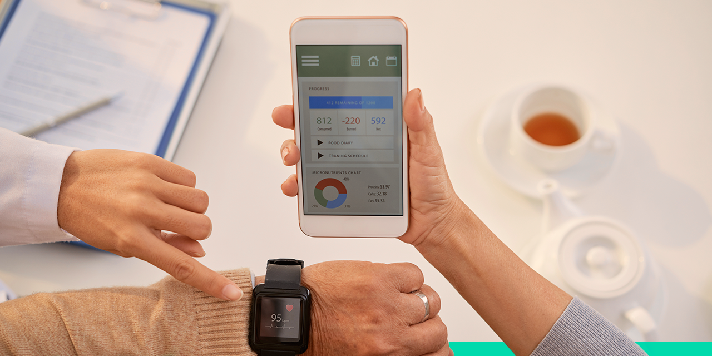
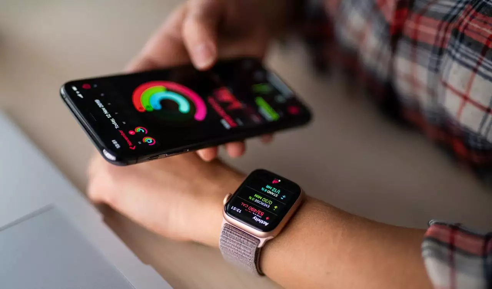

APLICATIVOS

Você sabia que utilizar aplicativos de saúde pode ajudar a criar e manter hábitos mais saudáveis? Além disso, com eles é possível acompanhar o desempenho de metas e
conferir características relacionadas à saúde física.
Assim, mesmo os instrutores de academia podem se beneficiar dos aplicativos, seja para uso próprio ou indicando aos alunos. Afinal, com eles, os clientes passam a
ter dados consistentes sobre treino, alimentação, sono e outras informações relevantes.
Pensando nisso, preparamos uma lista com 7 aplicativos de saúde, explicando o propósito de cada um e como eles podem ajudar a conquistar um objetivo. Confira!
1. CALM (RELAXAMENTO):
O Calm é um aplicativo de relaxamento, desenvolvido com foco em promover saúde física e mental para os usuários e deixá-los mais felizes. Afinal, um bom descanso é
fundamental para se manter saudável.
O aplicativo está disponível para Android e iOS. Entre as funcionalidades e benefícios que ele apresenta, estão:
.fazer alongamentos;
.praticar mindfulness;
.melhorar a concentração;
.melhorar a qualidade do sono;
.reduzir o estresse ou a ansiedade;
.acompanhar cenas, sons da natureza ou músicas para diferentes momentos.
2. SLEEP CYCLE (MONITOR DE SONO)
Reforçando a importância de uma boa noite de sono, o Sleep Cycle foi desenvolvido para ajudar a monitorá-lo. Com o app, você consegue entender os padrões dos seus
ciclos de sono e tem chances de identificar as possíveis causas para o cansaço excessivo durante o dia ou outros problemas ao dormir.
Ele está disponível para Android e iOS e apresenta funções adicionais que podem ajudar no relaxamento para dormir, como:
.histórias;
.meditações;
.biblioteca de músicas.
Depois de monitorar o seu sono, ele também tem a função despertador, podendo substituir outras ferramentas usadas com essa finalidade.
3. BEBA ÁGUA (HIDRATAÇÃO)
Se a ideia é falar sobre aplicativos de saúde, é importante conhecer o Beba Água. Afinal, o líquido tem diversas funções no organismo, como:
.proteger os órgãos;
.regular a temperatura;
.ajudar no metabolismo;
.manter o corpo hidratado.
Contudo, em uma rotina corrida, muitos se esquecem de beber a quantidade adequada de água. Na prática, o aplicativo envia notificações e acompanha o consumo, com
base nas suas configurações.
Esse app está disponível apenas para Android. Contudo, é possível pesquisar alternativas semelhantes caso o seu dispositivo seja iOS.
4. MYFITNESSPAL (DIÁRIO ALIMENTAR)
O controle da alimentação também é essencial para a saúde. Nesse caso, o MyFitnessPal (disponível em Android e iOS) ajuda a fazer esse monitoramento. Nele, é
possível registrar todos os alimentos consumidos ao longo do dia.
A partir disso, ele monitora os macros e micronutrientes ingeridos, além das calorias diárias. Assim, fica mais fácil acompanhar o seu desempenho nutricional.
Caso queira, é possível registrar dados como altura, peso e idade para estipular metas em relação ao peso e receber sugestões para ajudar a conquistá-las.
5. GOOGLE FIT (MONITORAMENTO DE ATIVIDADES FÍSICAS)
Outra solução que faz parte da lista de aplicativos de saúde que você pode usar é o Google Fit. Ele acompanha caminhadas, corridas e pedaladas para entender qual
foi a distância percorrida e gerar relatórios de desempenho.
Você ainda pode criar metas em relação ao tempo de exercícios ou, até mesmo, a perda de peso. O app permite integração aos smartwatches, mas só está disponível para
Android.
6. NIKE TRAINING CLUB (EXERCÍCIOS FÍSICOS)
O Nike Training Club traz sugestões de exercícios físicos que podem ser feitos em qualquer lugar, com alternativas que vão desde a yoga até atividades mais intensas.
Assim, ele consegue atender desde iniciantes até pessoas com mais experiência. O app é gratuito e pode ser baixado em dispositivos Android e iOS.
7. FLO (SAÚDE FEMININA)
As mulheres precisam acompanhar o próprio ciclo para organizar melhor a rotina — e os aplicativos de saúde ajudam nisso. Eles disponibilizam um espaço para
registrar os diferentes sintomas que podem surgir antes, durante e após a menstruação.
Uma dica é utilizar o Flo, que monitora todas as mudanças ao longo do mês. Ele pode ser baixado em dispositivos Android e iOS.
Agora que você conhece mais aplicativos de saúde, pode utilizá-los ou indicá-los para os seus amigos!
